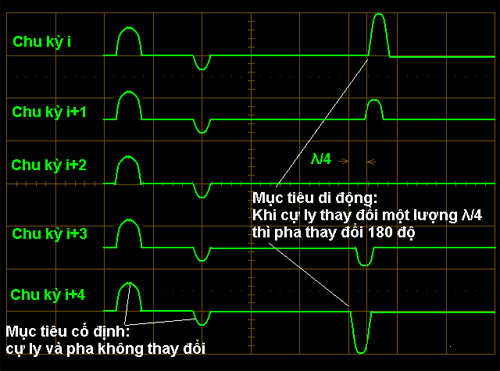
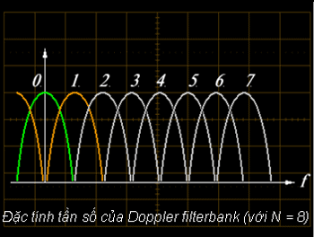

TRAC 2000 - GIỚI THIỆU CHUNG |
RADAR GIÁM SÁT SƠ CẤP PSR (PRIMARY SURVEILLANCE RADAR) |
LỌC MỤC TIÊU DI ĐỘNG ( MTI) |
|
 |
| Mục đích lọc mục tiêu di động (MTI – Moving Target Indication) là để loại bỏ tín hiệu phản xạ từ các mục tiêu cố định hay chuyển động chậm như nhà cửa, đồi núi, mây mưa … và chỉ cho tín hiệu của các mục tiêu di động (máy bay) được hiển thị trên màn hiện sóng. Thiết bị MTI của radar sử dụng lượng dịch tần Doppler của tín hiệu phản xạ từ mục tiêu di động để phân biệt mục tiêu di động và mục tiêu cố định. Đối với radar xung, lượng dịch tần Doppler được thể hiện thành sự thay đổi pha của xung phản xạ từ mục tiêu giữa các chu kỳ liên tiếp (xem hình vẽ). Lọc mục tiêu di động được thực hiện theo sơ đồ “Radar xung kết hợp” (Coherent radar), trong đó Dao động kết hợp ( hay COHO – Coherent Oscillator) được sử dụng làm pha chuẩn để xác định pha của các tín hiệu phản xạ. |
Xử lý tín hiệu theo các kênh cầu phương (Quadrature processing)
Để bảo toàn thông tin về pha, tín hiệu sau tách sóng pha thường được biểu diễn dưới dạng hàm số phức với phần thực (màu xanh lá) và phần ảo (màu xanh lơ). |
Lọc tần số Doppler  |
Bộ lọc Doppler như bộ lọc thông thấp:
Dãy song song các bộ lọc Doppler – Doppler filterbank: |
Doppler filterbank của radar sơ cấp TRAC 2000 Hệ thống xóa nhiễu cố định (Bộ lọc kênh MTI): |
|
|
Hệ thống xóa nhiễu di động (các bộ lọc kênh +FR/4 và -FR/4):
|
| Hệ thống tách mục tiêu tiếp tuyến (Bộ lọc kênh Zero): Các bộ lọc MTI, +FR/4 và -FR/4 đều xóa tín hiệu phản xạ có tần số Doppler bằng 0. Ngoài tín hiệu phản xạ từ mục tiêu cố định, các tín hiệu phản xạ từ mục tiêu chuyển động theo phương tiếp tuyến với radar (vận tốc bán kính của chúng bằng 0) cũng có tần số Doppler bằng 0. Do vậy bộ lọc kênh Zero được sử dụng để tách ra tín hiệu của các mục tiêu này. Bộ lọc Zero được kết nối từ 3 hoặc 4 mắt lọc cơ sở là các mạch Cộng qua chu kỳ. |
Sơ đồ mắt lọc cơ sở của bộ lọc kênh Zero |
Đáp tuyến tần số của bộ lọc kênh Zero với số mắt lọc khác nhau (FR – tần số lặp của radar) |
Đáp tuyến tần số của bộ lọc kênh Zero với 4 mắt lọc khi thay đổi tần số lặp (staggering) |